Greedy-Algorithmen und Dynamische Programmierung
Contents
- 1 Einführung
- 2 Greedy Algorithmen
- 3 Dynamische Programmierung
- 4 Greedy oder Dynamische Programmierung?
- 5 Anwendungsbeispiel: Interval Scheduling
- 6 Greedy Stays Ahead
- 7 Erinnerung: Intervalle
- 8 Zwei Algorithmen zum Finden der topologischen Sortierung
- 9 Anwendung: Sequence Alignment / Edit Distance
Einführung
- Viele Probleme sind durch einen Entscheidungsbaum systematisch lösbar.
- Dabei wird die zu suchende Lösung auf den optimalen Weg durch den Entscheidungsbaum reduziert.
Beispiel
- Erklärung des Algorithmus ist zu finden in Graphen und Graphenalgorithmen
- Traveling Salesman Problem mit 4 Knoten
- Dabei entsteht folgender Entscheidungsbaum:
- Vorteil des Entscheidungsbaums: Lösungsmöglichkeiten werden nicht übersehen
- Nachteil: Eventuell muss der gesamte Baum durchsucht werden (exponentielle Komplexität)
- Um diesen Nachteil auszugleichen gibt es verschiedene Verfahren:
- Divide & Conquer (Problem auf triviale Teilprobleme zurückführen, welche jeweils einfach zu lösen sind)
- Greedy Algorithmen
- Dynamische Programmierung
Greedy Algorithmen
- Greedy (dt. "Gierig") Algorithmen entscheiden an jedem Knoten lokal über die beste Fortsetzung der Suche,
- d.h. es wird jeweils die beste Entscheidung im Kleinen getroffen - ohne Rücksicht auf Konsequenzen für den gesamten Suchverlauf.
Beispiele
Anwendung beim Traveling Salesman Problem
- Erklärung des Algorithmus ist zu finden in Graphen und Graphenalgorithmen
- Reise immer zum nächstgelegenen, noch nicht besuchten Knoten:
- In diesem Beispiel wurde eine optimale Lösung gefunden. Dies muss im Allgemeinen aber nicht immer der Fall sein!
Anwendung beim Algorithmus von Kruskal für Minium Spanning Tree
- Erklärung des Algorithmus ist zu finden in Graphen und Graphenalgorithmen
- Sortiere die Kanten nach Gewicht
- Wähle stets die Kante mit niedrigstem Gewicht (d.h. im Allgemeinen die nächsgelegene), die keinen Zyklus verursacht
- Hierbei wird der Minimum Spanning Tree stets gefunden.
Dynamische Programmierung
(Programmierung bezieht sich hier nicht auf spezielle Programmiersprachen, sondern meint vielmehr die Optimierung des Programmablaufs)
- Oft ist dasselbe Teilproblem in mehreren Pfaden vorhanden.
Beispiel
- Im Beispiel mit Fibonacci-Zahlen wird Fib(2) gleich dreimal benötigt.
- Zur Erinnerung: Die Fibonacci-Folge
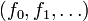
ist durch das rekursive Bildungsgesetz 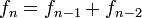
für- mit den Anfangswerten
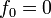
und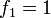
- definiert.
Konzept der Dynamische Programmierung
- Jedes Teilproblem soll nur einmal gelöst werden, d.h. einige Knoten werden mehrmals genutzt:
- Wie im Beispiel erkennbar, hat sich die Zahl der Knoten drastisch reduziert (von 9 auf 5).
- Allerdings müssen die Graphen jetzt gerichtet sein.
- Wenn der neue Graph azyklisch ist, kann man die Teilprobleme so anordnen, dass jedes
- nur einmal gelöst wird
- nur von bereits gelösten Teilproblemen abhängt
- Wenn der Graph nicht azyklisch ist (weil z.B. Teilproblem A die Lösung von Teilproblem B erfordert und umgekehrt),
- ist die Dynamische Programmierung auf dieses Problem nicht anwendbar.
Dynamisch programmierter Dijkstra Alrogithmus
- Erklärung des Algorithmus ist zu finden in Graphen und Graphenalgorithmen
- Löse Teilprobleme entsprechend ihrer Priorität, d.h. Priorität definiert die Ordnung
- Problem: Der Suchbaum ist bei diesem Algorithmus ungerichtet
- Lösung: Die Richtung der Kanten wird festgelegt, wenn man die Nachbarn eines Knotens in die Queue eingefügt
- Wenn man den Abstand vom Start bestimmt (Teilproblem), ist der Abstand von allen näher gelegenen bereits bekannt.
Greedy oder Dynamische Programmierung?
- Für viele Probleme gibt es unterschiedliche Entscheidungsräume und/oder unterschiedliche Entscheidungskriterien.
- Ein und dasselbe Problem kann also mit einer der Darstellungen (Greedy, Dynamische Programmierung, weitere...) effizient lösbar sein, mit anderen eventuell nicht.
- Das finden einer geeigneten Darstellung ist also eine zentrale Herausforderung.
Anwendungsbeispiel: Interval Scheduling
- gegeben:
- Mehrere Aufgaben mit unterschiedlichen Anfangszeiten und Endzeiten
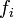
. - Es kann immer nur eine Aufgabe gleichzeitig bearbeitet werden: zwei Aktivitäten sind kompatibel, wenn deren Zeiten sich nicht überlappen.
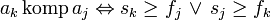
- Mehrere Aufgaben mit unterschiedlichen Anfangszeiten und Endzeiten
- gesucht:
- Arbeitsplan um möglichst viele Aufgaben nacheinander abzuarbeiten.
- Dabei haben alle Aufgaben dieselbe Priorität, obwohl die Dauer oft unterschiedlich ist.
Mögliche Lösungsansätze für einen Greedy Algorithmus
- Wähle (unter kompatiblen) die Aktivität, die als erste startet
- Wähle (unter kompatiblen) die Aktivität, die als erste endet (oder: die als letzte startet)
- Wähle (unter kompatiblen) die Aktivität, die am kürzesten dauert
- Wähle (unter kompatiblen) die Aktivität, die die wenigsten Inkompatibilitäten (überlappungen mit anderen Aktivitäten) hat
Ungünstige Ansätze:
- In den folgenden Beispielen werden die Aktivitäten mit | als Anfangs- bzw Endzeit markiert, --- steht für den Verlauf einer Aktivität.
- Weiter rechts bedeutet später in der Zeit.
- Gegenbeispiel zu 1.
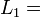
|--| |--| |--| |--|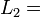
|---------------------|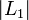
=4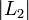
=1
- Der Ansatz würde Lösung 2 wählen, da die lange Aktivität am frühesten beginnt. Es wird dann nur 1 statt der optimalen 4 abgearbeitet.
- Gegenbeispiel zu 3.
|---------| |---------|
|----|
=2 =1
- Der Ansatz würde Lösung 2 wählen, da die mittlere Aktivität am kürzesten dauert. Es wird dann nur 1 statt der optimalen 2 abgearbeitet.
- Gegenbeispiel zu 4. (Anzahl der Inkompatibilitäten stehen jeweils in der Mitte der Aktivität)
|-3-| |-4-| |-4-| |-3-|
|-4-| |-2-| |-4-|
|-4-| |-4-|
|-4-| |-4-|
- Der Ansatz würde erst die mit 2, dann die beiden mit 3 Inkompatibilitäten wählen. Es werden dann nur 3 statt der optimalen 4 (obere Zeile) abgearbeitet.
Es verbleibt der 2. Ansatz, dessen Optimalität noch zu beweisen ist...
Greedy Stays Ahead
Idee der Beweismethode
Es genügt zu zeigen:
- die Greedy-Lösung ist nicht schlechter als die optimale Lösung
Beweis der Optimalität des 2. Ansatzes mit Greedy Stays Ahead
Ansatz
- Wähle (unter kompatiblen) die Aktivität, die als erste endet (oder: die als letzte startet)
- Die Wahl dieses Ansatzes sei
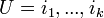
. - Eine (unbekannte) optimale Lösung sei
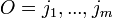
.
Ziel
- Die Lösung des Ansatzes soll genausoviele Aktivitäten schaffen wie die optimale Lösung (d.h. k=m)
Voraussetzungen
- Sortiere
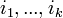
nach aufsteigender Endzeit - Sortiere
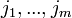
nach aufsteigender Endzeit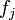
- Sortiere
(Da die Aktivitäten kompatibel sind, werden die Anfangszeiten automatisch auch sortiert)
Schritt 1
- Für die Indizes
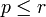
(inbesondere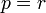
) gilt: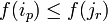
Beweis durch vollständige Induktion
- Induktions-Anfang:
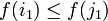
, da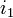
die erste Aktivität ist, die überhaupt endet
- Induktions-Voraussetzung:
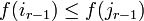
- Induktions-Schritt:
- Wegen Kompatibilität gilt:
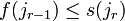
- =>
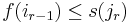
- => Die Greedy Strategie kann Aktivität
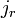
wählen, denn sie ist kompatibel mit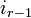
- Wenn die Greedy Strategie tatsächlich wählt, folgt daraus:
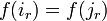
- Wenn nicht, kann nur gelten:
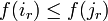
Schritt 2
- Zu zeigen:
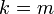
Beweis durch Widerspruchsannahme
- Falls
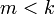
, wäre die Lösung der Strategie besser als die optimale. - Angenommen
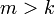
, dann enthält eine Aktivität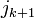
.
- Falls
- Nach Schritt 1 gilt:
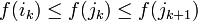
- Wegen Kompatibilität gilt aber:
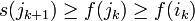
- -> Die Greedy Strategie hätte also noch die Aktivität wählen können.
- -> Widerspruch zur Annahme, dass die Greedy Strategie durchgelaufen ist, bis keine Aktivität mehr hinzugefügt werden kann
- -> m>k ist falsch
- -> m=k ist richtig
Beispiel zur Dynamischen Programmierung: Weighted Intervall Scheduling
- Die Problemstellung ähnelt dem des normalen Intervall Scheduling, hier haben die Aktivitäten aber Gewichte
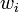
- (z.B. Bringt eine längere Aufgabe in einem Übunsgzettel in der Regel auch mehr Punkte, d.h. sie hat eine hohe Gewichtung)
Ziel
- Wähle die Aktivitäten so, dass der Gewinn (Summe der Gewichtungen der bearbeiteten Aktivitäten) maximal wird.
Ansatz
- Sortiere Aktivitäten nach ihrer Endzeit.
- Definiere eine Funktion
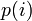
, welche für die Aktivität steht, die vor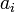
endet, mit kompatibel ist, unter allen Aktivitäten mit diesen Eigenschaften die letzte (d.h. mit der spätesten Endzeit) ist.
In folgendem Beispiel wird die Aktivität mit der Symbolik |-!-| betrachtet um deren p-Funktion zu evaluieren.
Für die p-Funktion kommen lediglich die Funktionen mit der Symbolik |===| und |====| in Frage, die untere der beiden ist die gesuchte Aktivität.
|====| |-!-| |--|
|===| |-----| |----|
- Trivial ist, dass
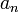
entweder zur Lösung gehört, oder nicht:
- Dadurch ergibt sich folgende Funktion:
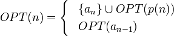
- Um den höchstmöglichen Gewinn zu erzielen, wird
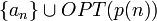
verwendet falls gilt: 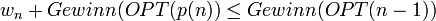
- Ansonsten wird
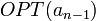
angewandt.
Erinnerung: Intervalle
Sortiere Intervalle nach aufsteigender
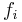
:- Gewinn
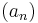
= max + Gewinn (p(n)), Gewinn - Gewinn = max ( + Gewinn ), Gewinn
- usw.
Bearbeite Teilprobleme in Reihenfolge der Sortierung
- => azyklischer Graph
- (a2 hängt von a1 ab, a3 von a2, a4 von a2 und a3 usw.)
Wie erkennt man, ob der Graph azyklisch ist, und wie fndet man die Reihenfolge?
- azyklischer, gerichteter Graph: „directed acyclic graph“ – DAG
- Ein Graph ist genau dann ein DAG, wenn es eine topologische Sortierung der Knoten gibt.
- Def.: Zeichne die Knoten so auf eine Gerade, dass alle Kanten nach rechts/in dieselbe Richtung zeigen
- => arbeite topologische Sortierung von rechts nach links ab.
Beispiel
Wie erklärt man einem zerstreuten Professor, wie er sich morgens anziehen soll?
- => Die topologische Sortierung ist hier nicht eindeutig, z.B. ist nicht klar, ob zuerst die Strümpfe angezogen werden sollen oder die Unterhose. Wann die Uhr angelegt werden soll, ist überhaupt nicht festgelegt. Mit dieser Beschreibung käme der arme Professor wohl kaum zurecht.
Zwei Algorithmen zum Finden der topologischen Sortierung
Algorithmus 1
- Suche einen Knoten mit Eingangsgrad 0 (ohne eingehende Pfeile), => in einem gerichteten azyklischen Graphen gibt es immer einen solchen Knoten
- Platziere diesen Knoten auf der Geraden (beliebig)
- Entferne den Knoten aus dem Graphen zusammen mit den ausgehenden Kanten
- Gehe zu 1., aber platziere in 2. immer rechts der vorhandenen Knoten (also der Knoten, die schon auf der Geraden vorhanden sind)
- => Wenn noch Knoten übrig sind, aber keiner Eingangsgrad 0 hat, muss der Graph zyklisch sein.
Bild: Ein zyklischer Graph
Algorithmus 2
Verwende Tiefensuche, um die Finishing Time zu bestimmen
- => zeichne Knoten nach abnehmender Finishing Time auf die Gerade
Anwendung: Sequence Alignment / Edit Distance
- gegeben: zwei Wörter (allgemein: beliebige Zeichenfolgen)
- gesucht: Wie kann man die Buchstaben am besten in Übereinstimmung bringen?
- Beispiel: worte – norden
Fälle:
- Matche a[i] mit b[j]. Falls a[i] == b[j], ist das gut. Andernfalls entstehen Kosten
- Wir überspringen a[i] oder b[j], => Kosten L
- gesucht: Alignment mit minimalen Kosten
Lösung:
- Suche kürzesten Pfad von links oben nach rechts unten (z.B. mit dem Algorithmus von Dijkstra)
- In unserem Beispiel von oben:
Problemlösung durch einen Entscheidungsbaum
Greedy Algorithm und dynamische Programmierung: Transformationen des Problems, sodass nicht der ganze Entscheidungsbaum durchlaufen werden muss. => effizient
- bei vielen Problemen ist keine Möglichkeit bekannt, das vollständige Durchlaufen des Entscheidungsbaumes zu vermeiden, z.B. Problem des Handlungsreisenden (TSP), 3-SAT
- Frage: Gibt es prinzipiell keinen effizienten Algorithmus, oder sind wir nur zu blöd?
- Derzeitiger Stand: viele dieser Probleme sind fundamental äquivalent „NP complete problems“ – „NP vollständig“ (NP = "nicht-deterministisch polynomiell")